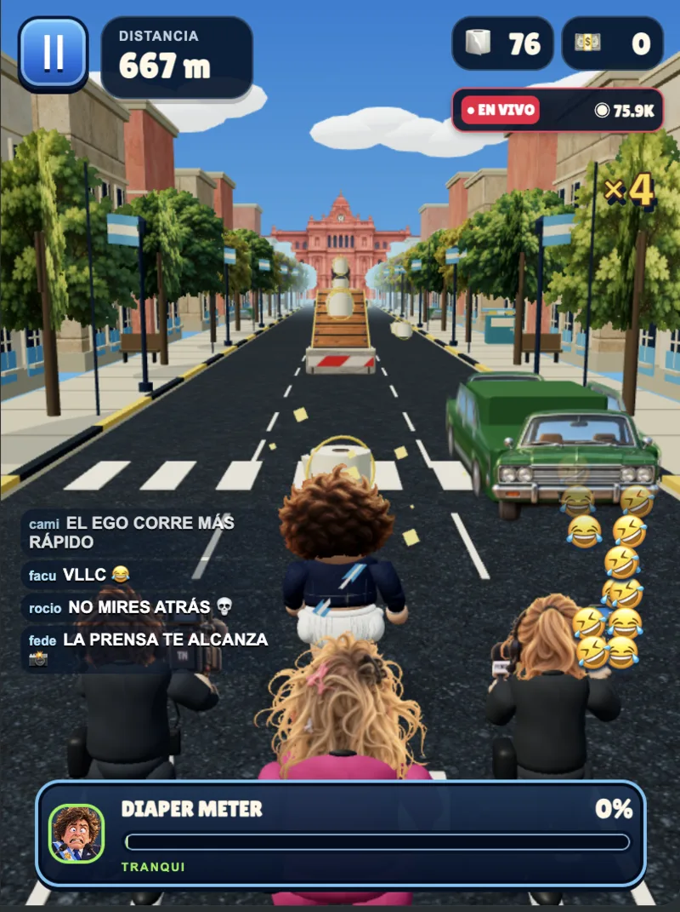

#1 EN JUEGOS*
#1 EN JUEGOS*MODO DIFÍCIL.
Diaper Boy Milei
La dignidad no se recupera.
El récord, sí.
SIN INSTALAR · SIN CUENTA · CON PAÑAL
*Ranking, jugadores y reseñas ficticios. Esto es parodia.
MIRÁ EL DESASTRE.


CORRÉ.
ESQUIVÁ.
JUNTÁ PAPEL.
NO MIRES ATRÁS.
El papel baja el Diaper Meter.
Los colectivos bajan tus expectativas.
UNA PREGUNTITA.
75 MIL TESTIGOS.
La prensa no te pierde de vista.

LAS FUERZAS
DEL CIELO.
LA GENTE
OPINA.
50 opiniones. Ninguna real.
Usuarios y reseñas ficticios de parodia. Sí, todos.
ÚLTIMA
ACTUALIZACIÓN.
Notas ficticias de parodia; no describen cambios reales.
El botón “¡AFUERA!” ya no borra tu progreso.
La prensa ya no aparece detrás de vos si estás en el baño.
El papel higiénico ahora vale más que las monedas.
VER HISTORIAL +
Se agregó “NO HAY PLATA” cuando te quedás sin monedas.
La motosierra ya no corta el botón de pausa.
Se corrigió un bug donde el pañal se inflaba más rápido que la inflación.
El helicóptero ya no desaparece cuando más lo necesitás.
¿ME GANÁS?
Corré. Hacé puntos.
Mandá tu resultado.
*Puntaje ilustrativo. Tu récord se guarda en este dispositivo.
¿QUÉ MIRÁS?
CORRÉ.
SIN DESCARGAS. DIRECTO EN EL NAVEGADOR.